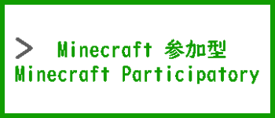
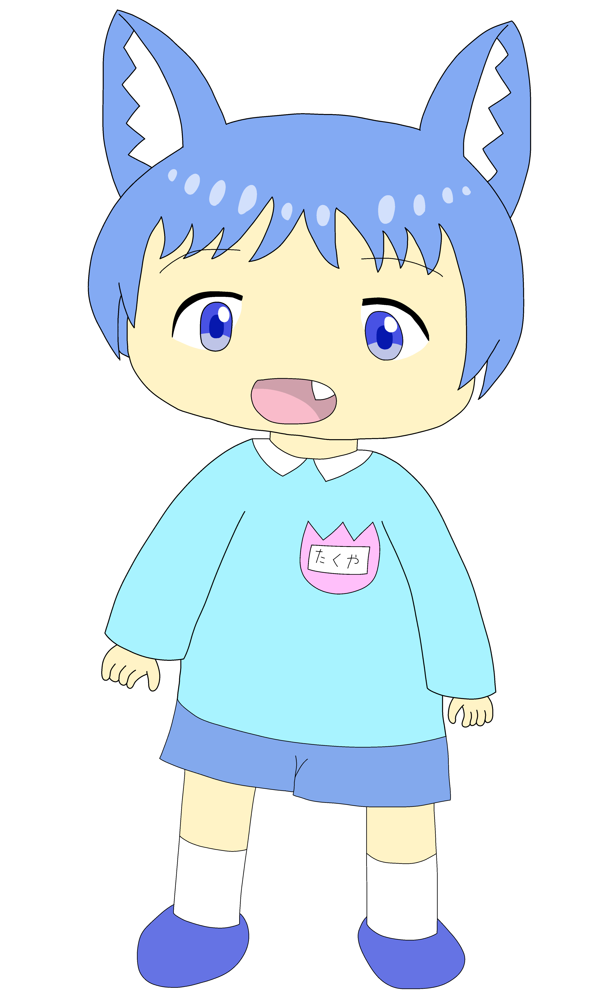
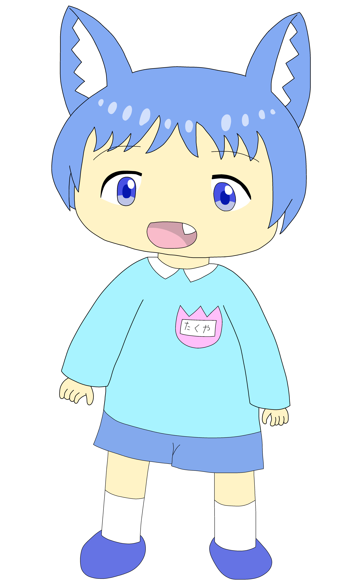

こねこprojec
★ ＭＥＮＵ ★ お知らせ notice



 

このホームページについて！
このホームページは、こねこP公式サイト・編集部 が運営する公式ホームページです。
ご自由にお入りください。新規メンバーは、大歓迎です。
※＜ こねこP ＞ え？幼児キャラ配信のメンバー募集ですか？え、え、
え～っと。。。あれはですねぇ。。。人数がぁ。。。
利用規約
１.当サイトは迷惑行為、荒らし、サーバーの負荷などを禁止しています。
※見つかった場合は、BANされる恐れがあります。
※BANされますと、確実にBANリストに載ります。
２.当サイトの YouTub ＆ X（ 旧Twitter ）や Discord などを宣伝する際は、荒らしを連れ込まない！
３.当サイトの 猫ちゃん & 犬くん の画像は著作権があります。
※無断使用をしないで、許可を取ってから使用してください。
※イラストを模写したい！模写した画像を投稿したい！時は、許可はいりません。しかし、公式サイト記載は必須です。
４.こねこprojecを楽しむ為に、ルールを守ってください。
５.こねこprojecよりも、自分の事を優先してください。
※忙しい時は、用事（ 幼児？ ）を済ませてからご覧ください。
６.BANされたら新アカウントで入らないでください。
※見つかった場合は、BANされる恐れがありますが、Discordの機能で同じ人はBANされると入れません。
７.Discord＆ライブ配信中は、必要の無い発言や宣伝を禁止しています。
８.プライベートの依頼は、各サイトのDMでお願いします。Discord ＆ X（ 旧Twitter ）

利用者はお読みください。
この項目は「 こねこP 」の関係者や使用素材を記載しています。
画像など、著作権がありますので、暇な時にご覧ください。
関係者 一覧
イラストは全て上記の方にお願いしています。
効果音やBGM.魔王魂
こねこP公式サイト編集部 2023 -